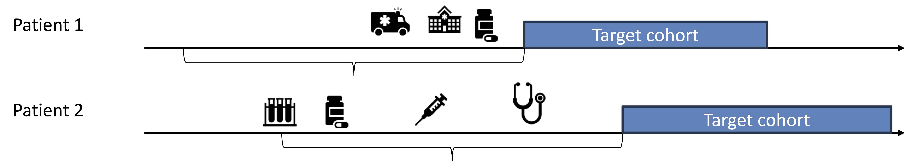

How to perform disease natural history (characterization)
About standardized characterization features
Standardized incidence rate estimation
Which OHDSI tools implement these processes
2 Cohort characterization

\(\ldots\) describes the baseline (and post-index) characteristics of people in a cohort
Who gets the disease / outcome ?
Standardized OHDSI approaches provide statistics of all conditions, drug and device exposures, procedures and other clinical observations [generally before index-date and \(\cal O\)(10,000)]
Constructs covariates (often called features or characteristics) in 3 ways
Choose a default set of covariates (often sufficiently large to be highly correlated with any arbitrary feature)
Choose from sets of pre-specified covariates
Create a set of custom covariates
at (1) the person-level (for machine learning) or (2) aggregated / averaged (to describe the population)
5 Default covariates
library(FeatureExtraction)covariateSettings <-createDefaultCovariateSettings(excludedCovariateConceptIds =1124300, # exclude diclofenacaddDescendantsToExclude =TRUE# and all descendants)covariateSettings
Characterization along with incidence rates (how often do people get the disease / outcome) are often of sufficient research interest alone to warrant publication
Incidence rate of drug initiation: centerpiece of a drug-utilization study (DUS)
9 Incidence
Incidence rates (and proportions) assess the occurrence of a new outcome (entry into outcome (O) cohort) in a population (in a target (T) cohort) during a time-at-risk (TAR)
Two metrics:
\[
\text{Incidence proportion} = \frac{
\text{# persons in cohort with new outcome during TAR}
}{
\text{# persons in cohort with TAR}
}
\]
Proportion of the population of interest that developed the outcome in a defined timeframe
\[
\text{Incidence rate} = \frac{
\text{# persons in cohort with new outcome during TAR}
}{
\text{person time at risk contributed by persons in cohort}
}
\]
Number of outcomes during the cumulative TAR for the population. (individual contribution to TAR stops at outcome occurrence)
10 Using CohortIncidence
We want to compute the incidence of heart attacks (acute myocardial infarctions) among (newly diagnosed) hypertensive patients
We need to define 2 cohorts: AMI and hypertension
Then we will use Capr, FeatureExtraction and CohortIncidence packages to handle the hard-work
11 Cohorts
library(Capr)# HypertensionessentialHypertension <-cs(descendants(320128),name ="Essential hypertension")sbp <-cs(3004249, name ="SBP")dbp <-cs(3012888, name ="DBP")hypertensionCohort <-cohort(entry =entry( # Entrance based on any of theseconditionOccurrence(essentialHypertension),measurement(sbp, valueAsNumber(gte(130)), unit(8876)),measurement(dbp, valueAsNumber(gte(80)), unit(8876)) ),exit =exit(endStrategy =observationExit() ))# Acute myocardial infarctionmyocardialInfarction <-cs(descendants(4329847),exclude(descendants(314666)), # Old myocardial infarctionname ="Myocardial infarction")inpatientOrEr <-cs(descendants(9201),descendants(262),name ="Inpatient or ER")amiCohort <-cohort(entry =entry(conditionOccurrence(myocardialInfarction),additionalCriteria =withAll(atLeast(1,visit(inpatientOrEr),aperture =duringInterval(eventStarts(-Inf, 0), eventEnds(0, Inf))) ),primaryCriteriaLimit ="All",qualifiedLimit ="All" ),attrition =attrition("No prior AMI"=withAll(exactly(0,conditionOccurrence(myocardialInfarction),duringInterval(eventStarts(-365, -1))) ) ),exit =exit(endStrategy =fixedExit(index ="startDate", offsetDays =1) ))cohortDefinitionSet <-makeCohortSet(hypertensionCohort, amiCohort)cohortDefinitionSet